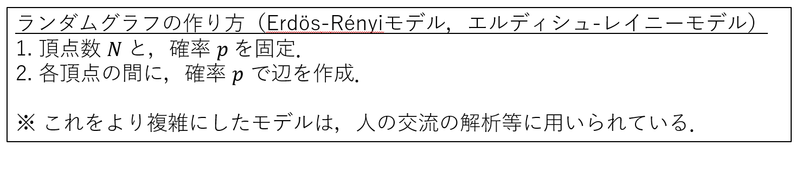
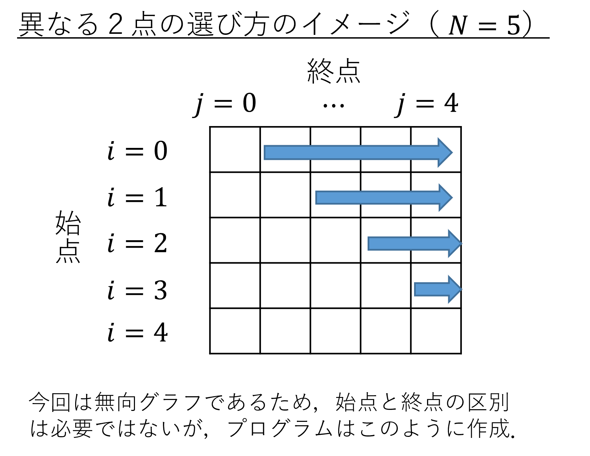

構造体 (11回目 内容2) 例題（このような問題が解けるようになるのが目標）解答例構造体の基本的な文法内容2に関する課題（締切：7月02日（火）20:00）11回目課題２（ランダムグラフの生成及びエッジ（辺）情報の表示）結果の例11回目発展課題2（辺の集合を用いたグラフの可視化）
深層学習で使われている人工ニューラルネットワークでは，行列
を使って，入力ベクトル
という計算を繰り返し行う．ただし，上の計算において，
そこで，行列とベクトルをまとめたものを簡易的なニューラルネットワークと考え（このようなまとまりを「層」と呼ぶことがある），これを一つの変数で表したい．また，そのようにして表されたものを利用して，上記の
xxxxxxxxxx
struct{ double A[ ][ ]; // 簡単のため，行列は 3x3 とする． double b[ ]; // 簡単のため，ベクトルは 3 次元とする．} nnlayer;
double sigma(double x){//relu と呼ばれる活性化関数． if(x > 0){ return x; } return 0;}
int main(void){ double A[3][3]={{1,2,3},{4,5,6},{7,8,9}}; double b[3]={1,2,3}; double x[3]={0.1,-0.2,0.3}; double f[3]; int i,j; nnlayer nn; //nn が保持している A や b を，上で宣言した A, b で初期化． //ニューラルネットワークの計算を実行（f に sigma(A x + b) を代入） for(i=0;i<3;i++){ printf("%lf \n", f[i]);//計算結果を表示． } return 0;}※ 実際にニューラルネットワークを使うには，やりたいことに合わせたデータを沢山集め，ここで言う行列
xxxxxxxxxx//struct0.c
typedef struct{ double A[3][3]; // 簡単のため，行列は 3x3 とする． double b[3]; // 簡単のため，ベクトルは 3 次元とする．} nnlayer;
double sigma(double x){//relu と呼ばれる活性化関数． if(x > 0){ return x; } return 0;}
int main(void){ double A[3][3]={{1,2,3},{4,5,6},{7,8,9}}; double b[3]={1,2,3}; double x[3]={-2,-2,3}; double f[3]; int i,j; nnlayer nn;
//nn が保持している A や b を，上で宣言した A, b で初期化． for(i=0;i<3;i++){ nn.b[i] = b[i]; } for(i=0;i<3;i++){ for(j=0;j<3;j++){ nn.A[i][j] = A[i][j]; } }
// ニューラルネットワークの計算を実行（f に sigma(A x + b) を代入） for(i=0;i<3;i++){ f[i]=0; for(j=0;j<3;j++){ f[i]=f[i]+nn.A[i][j]*x[j]; } } for(i=0;i<3;i++){ f[i] = sigma(f[i]); } for(i=0;i<3;i++){ printf("%lf \n", f[i]);//計算結果を表示． }
return 0;}
例題のような問題を解くためには，行列
このように変数をまとめられると，データ解析などで，データをまとめて1つの変数としてみなしたい場合などに便利である．
文法
xxxxxxxxxxstruct 自分で決めた新しい型の名前{ 1つ目の変数の宣言; 2つ目の変数の宣言; 3つ目以降の変数の宣言}; //最後にセミコロン ; をつける．
int main(void){ struct 自分で決めた新しい型の名前 変数名;//変数の宣言 新しい型の変数の名前.新しい型の変数がもつ各変数の名前 = ... ;//新しい型に含まれる各変数を使うときには「.」をつける return 0;}あるいは
xxxxxxxxxxtypedef struct{ 1つ目の変数の宣言; 2つ目の変数の宣言; 3つ目以降の変数の宣言} 自分で決めた新しい型の名前; //最後にセミコロン ; をつける．
int main(void){ 自分で決めた新しい型の名前 変数名;//変数の宣言 return 0;}構造体の中に含まれている変数をメンバーと呼ぶ．
構造体の変数に含まれている各メンバーを使うためには，変数名に . をつけて，その後にメンバー変数の名前を書く．
例1）長方形とその面積をまとめた型
xxxxxxxxxx// struct1.c
struct rect1{// rect1 という名前の新しい構造体を作った． double tate; // この構造体は，3つの double 型変数をまとめたもの． double yoko; // 構造体の中の変数の型は異なるものでもよい ． double menseki; // また，配列などが含まれていてもよい．};
typedef struct{// 新しい構造体を作り，rect2 という新しい型として登録した． double tate; double yoko; double menseki;} rect2; // 名前を後ろに書く．セミコロン ; をつけるのを忘れずに．
int main(void){ double tate = 2.0; double yoko = 3.0;
struct rect1 r1;//1番目の方法で宣言した型の変数はこのように作る． rect2 r2;//2番目の方法で宣言した型の変数を作るときには，struct を書かない．
r1.tate = tate; r1.yoko = yoko; r1.menseki = r1.tate*r1.yoko; printf("%lf\n", r1.menseki);
r2.tate = tate; r2.yoko = yoko; r2.menseki = r2.tate*r2.yoko; printf("%lf\n", r2.menseki); return 0;}
例2）構造体の中の変数の型は混ざっていてもよい．
xxxxxxxxxx// struct2.c
struct seiseki{ int test; //試験の得点 int report; //レポートの得点 int attend[3]; //出席の有無（出席ならば1，欠席ならば0）};
int main(void){ double attend_score; //出席点（attendの平均をとり，満点が100点となるように調整） struct seiseki prog1; prog1.test = 80; prog1.report = 69; prog1.attend[0] = 1; //出席ならば1 prog1.attend[1] = 0; //欠席ならば0 prog1.attend[2] = 1; attend_score = (double)100*(prog1.attend[0]+prog1.attend[1]+prog1.attend[2])/3; printf("プログラミング演習Iの成績：\n"); printf("総合得点は%f点です．", (prog1.test+prog1.report+attend_score)/3); return 0;}
練習問題11-2-1
上のプログラムに加筆を行い，以下を実現せよ．
構造体を定めている部分を typedef を使った書き方に書き換えてみよ．
ボーナス得点を表すint型の変数 bonusを追加してみよ．
prog1のメンバー変数のbonusの値を0と初期化せよ．
printf("総合得点は%d点です．",(int) (prog1.test+prog1.report+attend_score)/3); の後の行で，新しく seiseki 型の変数 prog1_rev を作成し，それに prog1をコピーせよ（prog1_revは，修正後の成績に関する変数のイメージ．）
prog1_revのメンバー変数 report の値を6点増やせ（レポートの再提出で， レポート点が5点追加されたイメージ．）
prog1_revのメンバー変数 bonus の値を10点増やせ（発展課題への取り組みで，ボーナス得点10点が加算されたイメージ．）
prog1_revの総合得点（prog1_rev.testとprog1_rev.reportとattend_scoreの平均）にボーナス得点を加えたものを最終成績とし，これを表示せよ．
以下のような手順でランダムにグラフを生成することを考える．このようなグラフ生成のモデルを Erdös-Rényiモデルという．
作成されたグラフはランダムグラフの一種である．

Erdös-Rényiモデルに基づきランダムグラフを生成し，生成したグラフの辺の集合に関する情報を取得したい．以下の制約を満たすように，次のプログラムを完成させ，辺の両端の頂点番号をprintfで表示せよ．
始点のノード番号を表す変数 sourceと，終点のノード番号を表す変数 destinationをもつ，構造体 Edgeを定義．
Edge型の配列edgeを宣言せよ．このとき，配列の大きさは，max_nodes * (max_nodes - 1) / 2とせよ．（max_nodesは頂点の最大数を表す．今回は50としている．）
「頂点数: 」がターミナルに表示された後に，頂点数を表す整数をscanfで読み取り，int型の変数 Nに格納．
「辺を作る確率:」がターミナルに表示された後に，確率（0～1の値）をscanfで読み取り，double型の変数 pに格納．
頂点番号の集合より異なる2点を重複がないように選ぶような，二重ループを作成する．このとき，条件式に関するヒントは下図の通りである．

異なる2点を選ぶごとに（ループの内部で）乱数を生成し，randomValueという変数に格納する（この部分は既に記述してあるので，変更不要．）
randomValueがpより小さければ，辺を引く．具体的には，ループの内部でedgeの要素番号が小さい順にアクセスし，sourceとdestinationに，始点番号と終点番号を代入する．
提出要領
完成したソースファイルに
kadai11_2_学籍番号.cと名前を付けて保存し，BEEF plusの「11回目課題2提出」へ提出せよ．
注意
Erdös-Rényiモデルでは，辺の数が実行する度に代わる．そのため，辺の情報を格納する配列
edgesの大きさは，生じ得る辺の最大数（max_nodes * (max_nodes - 1) / 2）としておく．実際には，この配列の要素番号の小さい順に格納していくため，後ろの方の配列は利用されていないことになっている．
注意
RAND_MAXという変数は，プログラム中に定義されていないが，利用可能な変数である．rand()関数の出力の最大値が格納されている．
xxxxxxxxxx//kadai11_2.c
struct { int int }
int main() { int N = 0; //ノード（頂点）の数 double p; //ノード間にエッジ（辺）を引く確率 double randomValue; //乱数 int max_nodes = 50; //ノード（頂点）の最大数 int num_edge = 0; // エッジ（辺）の数 Edge edges[max_nodes * (max_nodes - 1) / 2];
printf("頂点数: "); printf("辺を作る確率: ");
for (int i = 0; i < N; i++) { for { randomValue = (double)rand() / RAND_MAX; //このようにすると0から1の乱数が生成される
if (randomValue < p) { } } }
// (以下は修正不要) 辺の情報をテキストファイルに出力 FILE* file = fopen("kadai11_2.txt", "w"); if (file != NULL) { for (int i = 0; i < num_edge; i++) { printf("%d %d\n", edges[i].source, edges[i].destination); fprintf(file, "%d %d\n", edges[i].source, edges[i].destination); } fclose(file); } return 0;}
xxxxxxxxxx頂点数: 10辺を作る確率: 0.20 62 42 62 83 43 63 7
11回目課題2で完成したプログラムを実行すると，辺の始点と終点を格納したテキストファイルkadai11_2.txtが出力される．
これを読み込み，グラフを可視化する最下部のpythonのプログラム（visgraph_edge.py）を最下部に掲載している．
これをkadai11_2.txtと同じディレクトリに配置し，実行することで，グラフを描画せよ．
pythonプログラムの実行時には，ターミナルに
xxxxxxxxxxpython visgraph_edge.py *******と入力せよ．このとき，アスタリスクは学籍番号（数字7桁）に置換せよ ．
提出要領（本課題への解答は必須ではない．加点要素である．）
pythonプログラムを実行すると，kadai11_2_学籍番号.pngという画像が出力される．これを，BEEF plusの「11回目課題2提出」より提出せよ．
注意
gitpodで実行した際に，パッケージがないという旨のエラーが出た場合，
pip install networkx
pip install matplotlibを実行してから，
python visgraph_edge.py ******を実行して下さい．
以下は，グラフ可視化用のpythonコード：
xxxxxxxxxx#!/usr/bin/env python# -*- coding: utf-8 -*-
#visgraph_edge.pyimport networkx as nximport matplotlib.pyplot as pltimport sys
# テキストファイルからグラフ情報を読み取るdef read_graph_from_file(file_path): graph = nx.Graph() with open(file_path, 'r') as file: for line in file: source, destination = line.strip().split() graph.add_edge(int(source), int(destination)) return graph
args = sys.argvgakuban = args[1] #gakubanfigname = 'kadai11_2'G = read_graph_from_file(figname+'.txt')pos = nx.spring_layout(G, seed=42)nx.draw_networkx(G, pos)nx.draw_networkx_nodes(G, pos, node_size=500, node_color='lightblue') plt.axis('off') plt.title(str(gakuban))plt.savefig(figname+'_'+str(gakuban)+'.png')plt.show()